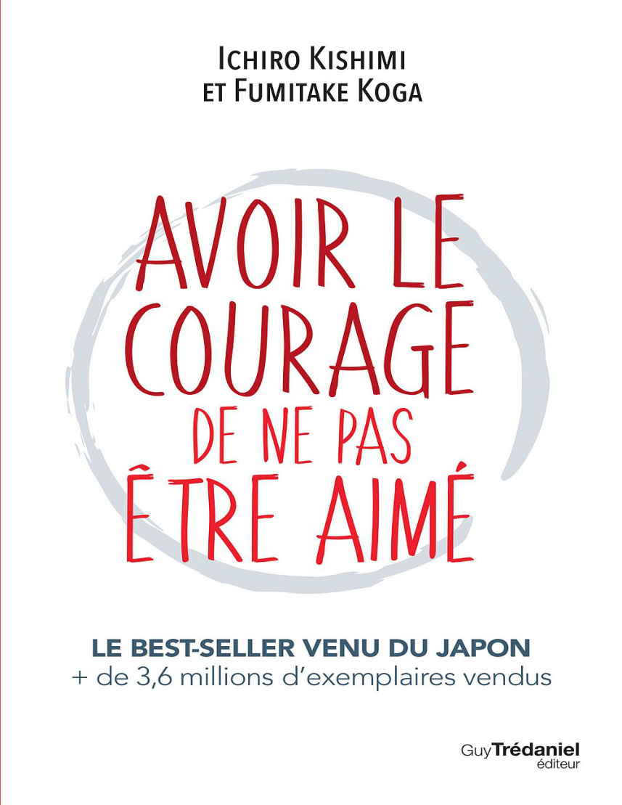

savoirs
Avoir le courage de ne pas être aimé


Carte d’identité
- Auteur
- Ichiro Kishimi et Fumitake Koga
- Genre
- savoirs
- Éditeur
- Guy Trédaniel
- Année
- 2018
- ISBN
- 9782813216458
- Fichier
- 268 pages PDF
Résumé du livre
Le dialogue progresse en cinq nuits. Il confronte les explications centrées sur le passé à une approche fondée sur les buts, examine les difficultés relationnelles, puis la séparation des tâches, le sentiment de communauté et la manière de vivre le présent.
Sections et chapitres · 9 repères paginés
Synthèses extractives de repérage fondées sur le texte des sections. Elles ne remplacent pas des résumés analytiques exhaustifs.
01Page de titrePDF p. 4
Titre de l’édition originale : Kirawareru Yuki Publié pour la première fois au Japon par Diamond Inc., Tokyo, en 2013. Publié ensuite en Australie et en Nouvelle Zélande par Allen & Unwin en 2017. La traduction française a été réalisée depuis l’édition anglaise, avec l’accord des ayants…
Lire à cette page ↗02Note des auteursPDF p. 6
NOTE DES AUTEURS Sigmund Freud, Carl Jung et Alfred Adler sont tous les trois des géants du monde de la psychologie. Ce livre distille les idées et les doctrines philosophiques et psychologiques d’Adler, sous la forme d’un dialogue narratif entre un philosophe et un jeune homme. La…
Lire à cette page ↗03IntroductionPDF p. 10
INTRODUCTION JEUNE HOMME : Je vous pose la question encore une fois : vous croyez réellement que le monde est, à tous égards, un endroit simple ? PHILOSOPHE : Oui, ce monde est étonnamment simple, et la vie en elle- même également. JEUNE HOMME : Alors ça, c’est un argument idéaliste que…
Lire à cette page ↗04LA PREMIÈRE NUIT. Nie le traumatismePDF p. 15
LA PREMIÈRE NUIT Nie le traumatisme Le jeune homme entra dans le cabinet et s’avachit sur une chaise. Pourquoi était-il si déterminé à rejeter les théories du philosophe ? Il manquait de confiance en lui, ce qui, depuis son enfance, avait été aggravé par des sentiments d’infériorité…
Lire à cette page ↗05LA DEUXIÈME NUIT. Tous les problèmes sont des problèmes de relations interpersonnellesPDF p. 52
LA DEUXIÈME NUIT Tous les problèmes sont des problèmes de relations interpersonnelles Le jeune homme tint parole ; exactement une semaine plus tard, il retourna au cabinet du philosophe. À dire vrai, il avait ressenti le besoin impérieux d’y retourner déjà deux ou trois jours après sa…
Lire à cette page ↗06LA TROISIÈME NUIT. Rejette les tâches d’autruiPDF p. 113
LA TROISIÈME NUIT Rejette les tâches d’autrui Après deux semaines d’angoisse, le jeune homme rendit à nouveau visite au philosophe. La tâche qui lui avait été confiée pesait lourd sur ses épaules, mais il semblait impossible de trouver une réponse convaincante. Plus le jeune homme y…
Lire à cette page ↗07LA QUATRIÈME NUIT. Là où se trouve le centre du mondePDF p. 155
LA QUATRIÈME NUIT Là où se trouve le centre du monde Il était moins une – j’ai failli me faire prendre ! La semaine suivante, le jeune homme rendit à nouveau visite au philosophe, et frappa à la porte d’un air indigné. Séparer les tâches et alléger le poids de ses relations…
Lire à cette page ↗08LA CINQUIÈME NUIT. Vivre pour de bon ici et maintenantPDF p. 200
LA CINQUIÈME NUIT Vivre pour de bon ici et maintenant Le jeune homme pensa à part lui : La psychologie adlérienne analyse en profondeur les relations interpersonnelles. Et l’objectif final de ces relations interpersonnelles, c’est le sentiment communautaire. N’y a-t-il pas quelque chose…
Lire à cette page ↗09ÉpiloguePDF p. 262
ÉPILOGUE Dans la vie, il arrive qu’on tombe par hasard sur un livre un jour et qu’on s’en retrouve transformé le lendemain matin. C’est durant l’hiver 1999, alors que j’étais un jeune homme d’une vingtaine d’années, que j’ai eu la grande chance de faire une telle découverte, dans une…
Lire à cette page ↗